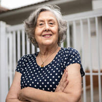
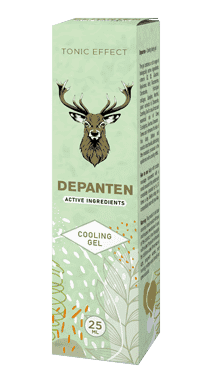

Alig tudtam járni a térd- és hátfájdalom miatt. A tabletták, injekciók
és műtétek nem hoztak enyhülést. Épp ellenkezőleg: elvették a pénzemet
és az energiámat. Nem tudtam, mit tegyek. Szerencsére tudomást szereztem erről a
készítményről. És épp ideje volt! Már az első alkalommal jobban éreztem
magam. Eltelt egy hónap, fiatalnak és élénknek érzem
magam. Hosszú sétákat teszek, és gondozom a kertet, amelyet az
unokámmal ültettem. A fájdalom elmúlt. Köszönöm!
★ ★ ★ ★ ★
Nikolett Veresné, 73 éves
Egyszerű és hatékony
Nehéz elhinni, hogy egy ilyen egyszerű módszer ennyire hatékony, csak használja a
terméket, és már néhány nap múlva élvezheti a kellemetlenségek
nélküli mozgást. A nővérem, az unokatestvéreim és én is használtuk,
és mindenkinek ajánljuk. Viszlát, ízületi panaszok.
★ ★ ★ ★ ★
Klaudia Deákné, 67 éves
Úgy érzem, szükség van rám.
Az évek kemény munkája megviselte a térdeimet. Megígértem az unokáimnak,
hogy focizni vagy biciklizni fogok velük, de a fájdalom miatt nem tudtam. A gyerekek ezt
nem értették, és megharagudtak. Haszontalannak éreztem magam. Amíg a lányom
ki nem próbáltatta velem a . Azonnal
éreztem a különbséget. Már
egy hónapja használom, és erősnek érzem magam, most már úgy tudok időt
tölteni a családommal, különösen az unokáimmal, mint régen.
★
★ ★ ★ ★
Miklós Vörös, 67 éves
Újra élénk vagyok és mozgékony.
A túlsúly és a lábaimat ért nagy terhelés tönkretették a térdeim,
nem bírtam elviselni a fájdalmat, ezért naponta több mint 10 tablettát
szedtem. De állandóan lomhának és álmosnak éreztem magam, nem tudtam
normálisan élni. Szerencsére egy kolléga ajánlotta nekem ezt a csodálatos
terméket. Kiderült, hogy ez a tökéletes megoldás. A fájdalom varázsütésre
eltűnt, és újra normálisan tudtam dolgozni, mint fodrász. Visszanyertem az egészségemet,
ami lehetővé tette, hogy elkezdjek edzeni és... 10 kg-ot fogytam! Hihetetlen változás.
★
★ ★ ★ ★
Klára Lakatosné, 43 éves
A feleség már nem panaszkodik.
Otthon a feleségem mindig talál nekem valami tennivalót: megjavítani egy csapot,
összeszerelni egy szekrényt vagy lefesteni a kerítést. Hogyan kellett volna
lehajolnom és megerőltetnem magam, ha fájt a hátam? A könyököm és
a térdem is. Szerencsére a gél újra
erőssé tette a gerincemet
és az ízületeimet. Úgy éreztem, mintha egy súlyt vettek volna le a hátamról,
amit évek óta cipeltem. A feleségem már nem panaszkodik, hogy nem akarok segíteni
neki a ház körül!
★
★ ★ ★ ★
Miklós Somogyi, 67 éves
Visszamentem dolgozni
Képzeljék el, hogy az egyik karjuk már nem mozog. Nehéz? Ez történt
velem is, mert az ujjaim fájtak, a kezem megdagadt és remegett. Ékszerész
vagyok, amit csinálok, az a munkám és a szenvedélyem. Egyre gyakrabban be
kellett zárnom a kis műhelyemet, ami jelentős bevételkiesést eredményezett.
Elkezdtem keresni, hogyan lehet helyreállítani az ízületeimet, és mindenhol
azt mondták, hogy a legjobb termék a .
Kipróbáltam, bár nem nagyon
bíztam a sikerében. De 20 nap után, a kezem egészségesebb volt,
mint 10 évvel ezelőtt. Vissza tudtam menni dolgozni!
★ ★ ★ ★ ★
Egon Katona, 55 éves

Új élet ilyen alacsony áron
Általában, ha valami hatékony, akkor annak drágának kell lennie. Így
volt ez a személyes masszőrömmel is, aki havonta háromszázezer forintomba került,
és állítólag csodákra képes. De a kezelések után nem volt
enyhülés, az ízületek és a gerincem még jobban fájtak. Amikor a sógorom
azt tanácsolta, hogy próbáljam ki a , azt hittem,
hogy egy baromság.
Hogyan segít rajtam a gél, ha egy drága masszőr sem segített? Látniuk
kellett volna az arcom, amikor a fájdalom elmúlt. Csoda!
★ ★
★ ★ ★
Kornélia Szőkené, 67 éves
Az egyetlen hatékony módszer
Különböző módszerekkel próbálkoztam, hogy megszabaduljak a csípőízületi
fájdalomtól. Semmi sem működött. Mindennek tetejébe, a degeneráció
átterjedt a gerincemre. A ennek az
ellenkezője történt. Már
nem aggódom az egészségem miatt, mert 100%-ig egészséges
vagyok!
★ ★ ★ ★
★
Laura Orbánné, 59 éves
14 nap, hogy elkezdje elfelejteni az ízületi vagy gerincfájdalmakat:
bizonyítottan hatékony!
Helló,
Sergio Barbu vagyok, tudós és specialista a molekuláris biológia területén.
Ezen az oldalon szeretném bemutatni életem legnagyobb eredményét. Kidolgoztam egy módszert,
és hiszem, hogy bárki használhatja a fájdalom megszüntetésére, valamint
az ízületek és a gerinc helyreállítására.
Tehát vegyszerek és alacsony hatású készítmények
nélkül, ha úgy tetszik:
Enyhíti az ízületi és gerincfájdalmakat — a módszer
alkalmazása után azonnal észreveheti a megkönnyebbülést;
87%-ban helyreállítja és erősíti az ízületeket, inakat, izmokat
és a gerincet, hogy úgy működjenek, mint fiatalon;
Helyreállítja a fizikai egészséget, és segít
megszabadulni a rokkantság lehetőségének félelmétől;
Megszünteti az ízületek és a gerinc merevségét és zsibbadtságát,
valamint helyreállítja a kényelmet és a mozgás simaságát;
Védi az ízületeket és gerincet az elhasználódástól,
és megőrizni az abszolút fizikai egészségét az elkövetkező évekre;
Megszünteti a dystrophiát, a gyulladást — csökkenti a fájdalmat
és helyreállítja a mozgáskomfortot;
Felgyógyulni a szervezetnek a törésekből, ficamokból és sérülésekből;
És emiatt 3-szor több energiája van, és újra élvezheti az életet!
Tudnia kell, hogy mindez veszélyes műtétek, drága eljárások és végtelen,
szakemberek rendelői előtti sorban állás nélkül érhető el (akik gyakran szintén
tehetetlenek a problémával szemben). Vegyszerek használata nélkül (melyek károsak
a májra, a gyomorra és a vesére). ... És végre több ezer forintot spórolhat.
Ha ezt szeretné csinálni, olvassa el a módszeremet.
Nem számít, hány éves, vagy mióta szenved ízületi vagy gerincfájdalomtól.
Nem számít, hogy a csontjai két napja vagy 20 éve nyikorognak. Még akkor is, ha
úgy gondolja, hogy az ízületei és a gerince teljesen tönkrementek, és már
minden reménye elveszett a normális életre... Tudnia kell, hogy van esélye arra,
hogy újra fiatalnak érezze magát. Fájdalom nélkül!
Nézze meg, hogy az én módszerem miért jelent alternatívát az
ízületi fájdalmak kezelésére szolgáló hatástalan módszerekkel
szemben:
Segít enyhíteni a fájdalmat közvetlenül az alkalmazás után,
és egy kúra után évekig megszüntetheti azt.
Biztonságos a szervezet számára: a makromolekuláris formula
100%-ban természetes összetételként tökéletes harmóniában működik
az emberi testtel. A gél tehát nem káros a szervezetre, és nem okoz függőséget;
helyreállítja még a legsérültebb ízületeket és a
gerincet is, hogy azok úgy működjenek, mintha újak lennének, fájdalom
nélkül;
könnyen használható, és mindenki saját maga is használhatja
otthon, ahelyett, hogy sorba kellene állnia egy szakemberhez;
Ezzel több ezer forintot takarítanak meg, amit korábban drága
és nem hatékony módszerekre költöttek.
Kifejlesztettem egy természetes módszert, amely regenerálja a sérült
ízületeket és a gerincet.
Ennek köszönhetően elfelejtheti a fájdalmat és a teljes rokkantságtól
való félelmet... Minden ízületi vagy gerincgyengeséggel kapcsolatos probléma
a múlté lesz. Nemcsak a fájdalmat, hanem a merevséget, az ízületi nyikorgást
és a duzzanatot is teljesen megszünteti. Végre képes lesz megtenni mindazt, amire eddig
képtelen volt a fájdalom miatt.
Lépcsőt mászni, lehajolni, az unokákat a karjaiban cipelni minden gond nélkül.
Nyugodtan gondozhatja a kertet, sétálhat, kerékpározhat és táncolhat! És
mindezt azért, mert sikerült kifejlesztenem egy új formulát, amely elősegíti
az ízületek helyreállítását és teljes
mobilitását. Hogyan sikerült?
Meg akartam menteni édesanyámat a rokkantságtól.
Egy friss tanulmány szerint Magyarországon minden harmadik 36 és 95 év közötti
embernek ízületi vagy gerincproblémája van. Ezek az emberek gyakran észre sem
veszik, és azt gondolják, hogy normális, ha a testük fáj, elzsibbad vagy néha
"kattog". A legtöbbjüknél azonban fennáll a jelentős porckopás
és degeneráció veszélye, ami rokkantsághoz vezethet.
Sajnos édesanyámat is érintette ez a probléma. Eleinte csak a lépcsőmászás
vagy a kanapéról való felkelés okozott neki nehézséget. De aztán a
helyzet rosszabbodott... A kertben, ahol annyira szeretett dolgozni, elkezdtek nőni a gyomok, mert nem
tudta
gondozni a kertet. Már nem hívott meg minket családi vacsorákra. Egyre ingerlékenyebb
és szomorúbb lett. Később a térdében, csípőjében, gerincében és
könyökében érzett fájdalom miatt már mosakodni sem tudott.
Ez életveszélyes volt!
A legrosszabb az volt, hogy ízületeinek mozdulatlansága és fájdalmai életveszélyessé
váltak. Soha nem fogom elfelejteni azt a napot, amikor anyámért mentem, hogy elvigyem egy
rutinvizsgálatra. Anyukámnak csak át kellett mennie az utcán és... majdnem elütötte
egy autó! A fájdalom miatt nagyon lassan sétált, és hirtelen annyira megfájdult
a térde, hogy nem tudott több lépést tenni. A sofőr az utolsó
pillanatban fékezett...
Dühös voltam, amikor megláttam egy nagy zacskónyi agyonreklámozott ízületi
készítményt, ami anyukámnál volt. Kiderült, hogy marokszámra nyelte
ezeket. Így vált világossá, hogy miért volt gyomorfekélye, májproblémái
és egyéb problémái... Valamit tenni akart ellene, de ezek a készítmények,
amellett, hogy nem használtak, teljesen megmérgezték a szervezetét.
Hogyan találtam fel az elpusztíthatatlan ízületek "szabadalmát"?
Segítenem kellett édesanyámnak, hogy visszakapja egészséges ízületeit,
és ezzel együtt egészségét és életörömét. Azt akartam,
hogy az unokáimnak nagyszerű nagymamája legyen, ahogyan nekem is nagyszerű édesanyám
volt. Ezért azt gondoltam: "Te egy tudós vagy! Számos olyan készítmény
felfedezésében vettél részt, amelyek különböző egészségügyi
problémák ellen küzdenek. Miért nem készítesz olyan terméket, ami erősíti
az ízületeket?" Szóval, elkezdtem dolgozni ezen a problémán...
Egy évig intenzív laboratóriumi vizsgálatokat végeztem. Különböző
hatóanyag-kombinációkat próbáltam ki édesanyámon. Hangsúlyoznom
kell, hogy ezek mind 100%-ban növényi eredetűek és biztonságosak a szervezet számára.
A szerzetesi gyógynövényreceptek inspiráltak, és a népi gyógyítók
sokéves tapasztalatát kombináltam a molekuláris biológia legújabb eredményeivel.
A tudományos ismeretek, a természetbe vetett hit és egy csipetnyi szerencse gyorsan kifizetődött:
előálltam egy egyedülálló makromolekuláris formulával.
Azonnal elkezdtem összeállítani a nagyszabású kísérletek dokumentumait.
Hatékonyságát az USA-ban és Japánban végzett nagyszabású
tanulmányok is megerősítették! A még tesztelési fázisban lévő
makromolekuláris formulám több ezer önkéntesnél állította helyre
természetes módon az ízületek és a gerinc működését.
Bámulatos hatások
Édesanyám fájdalmai csökkentek, amint elkezdte használni a termékemet. Örült,
hogy a térdében érzett éles fájdalom már nem zavarta. De ez csak a kezdet
volt. Egy hét múlva az ízületek és a gerinc már nem ropogtak és
zsibbadtak. Ezután a térd és a könyök duzzanata eltűnt, és minden gyulladás
az ízületben és a gerincben megszűnt. Anyukám visszatért szeretett kertjének
gondozásához. Mindannyian meglepődtünk, amikor hirtelen felült a biciklijére,
és boldogan eltekert!
— Miért mozogsz ilyen lassan? — kérdezte türelmetlenül, amikor összegyűltünk a
családi vacsorára. Már mindannyian hozzászoktunk, hogy a jelenlétében
lelassulunk. Alig három hét elteltével anya örömmel vallotta be: "Fiam, az
ízületeim egészségesek. Úgy érzem magam, mint fiatal koromban! Feltaláltad
az ízületi fájdalom ellenszerét! Hány emberen fogsz
segíteni?" Sőt, édesanyám a 85. születésnapján a dédunokáival
táncolt. A vendégek szemei kipattantak a csodálkozástól!
Édesanyám
visszanyerte teljes mozgásképességét, és ezzel együtt energiáját
és életörömét.
Eddig az ízületek és a gerinc elhasználódása az évek során elkerülhetetlen
volt. Ma az én makromolekuláris formulám segítségével az emberi csontváz
ízületeinek és csigolyáinak kopása nemcsak lelassítható, hanem vissza is
fordítható.
Hadd magyarázzam el pontosan, hogyan működik az erős ízületek képlete. A folyamat
meglehetősen összetett, de megpróbálom úgy elmagyarázni, hogy az is megértse,
aki nem tudós.
Segít enyhíteni a fájdalmat és helyreállítani az ízületeket
a nap 24 órájában
Az ízületek és a gerinc az évek során elhasználódnak, a túlsúly,
a megerőltető fizikai aktivitás, a nehéz terhek cipelése, a túlzott testmozgás, a sérülések
és a zúzódások miatt elhasználódnak. Az ízületi folyadék
termelődése csökken. Az ízületek olyanok lesznek, mint a kenetlen illesztések: természetes
kenés nélkül egymáshoz dörzsölődnek és tönkremennek. Idővel merevséget
és szörnyű fájdalmat kezd érezni, ami megakadályozza a normális mozgásban.
Súlyos gyulladás és degeneráció alakul ki.
Sajnos a porc és az ízületi folyadék sejtjei nem képesek önmagukat regenerálni.
Ez azt jelenti, hogy az emberi test más sejtjeivel ellentétben nem tudnak maguktól újra
életre kelni. Ezért kopnak az ízületek és a gerinc nap mint nap. Természetesen
nem hagyhatja abba a sétát vagy a mindennapi tevékenységeket az ízületek
és a gerinc védelme érdekében. Ez abszurd lenne.
Ezért volt a célom egy olyan radikális formula megalkotása, amely megszünteti
a fájdalmat, helyreállítja a sérült ízületeket és a gerincet, és
védelmet nyújt a jövőbeli károsodások ellen. És megértettem!
Kifejlesztettem egy makromolekuláris formulát az intenzív regenerációhoz.
neveztem el.
A biológiailag aktív anyagok azonnal behatolnak az érintett területekre, és segítenek
kikapcsolni az elektromos fájdalomimpulzusokat sejtszinten, így ön fájdalom
nélkül mozoghat. Tulajdonságaiknak köszönhetően serkentik a vérkeringést
és a sejtek táplálását, 300%-ban helyreállítva a regenerációs
folyamatokat. Ugyanakkor a természetes összetevők beindítják a porc és
az ízületi folyadék automatikus regenerációs folyamatait. A formula rendszeres
használata elegendő a napi 24 órás regenerálódáshoz. Azt csinálja, amit
mindig is szokott, az ízületei és a gerince pedig fiatalabbá és mozgékonyabbá
válnak. Így a degeneráció és a fájdalom akár 30 nap alatt végleg
megszűnhet.
Miért nevezik az én makromolekuláris formulámat az "ízületi
fájdalmak csodaszerének"?
TÖBB MINT 98%-OS HATÉKONYSÁGGAL REGENERÁLJA A PORCSZÖVETET ÉS AZ ÍZÜLETI FOLYADÉKOT*.
Eddig talán csodának tűnhet. Ezt a tényt azonban megerősíti édesanyám esete
és az a 14 000 ember, akiknek már sikerült visszanyerniük egészséges ízületeiket
és gerincüket a módszeremnek köszönhetően. Továbbá, a makromolekuláris
formula hatékonyságát egy chicagói amerikai kutatóközpont minden kétséget
kizáróan bizonyította. Ez egy világszínvonalú felfedezés,
amely kivívta a reumatológia, az ortopédia és a neurológia legjobb szakembereinek
elismerését és csodálatát. Másrészt folyamatosan kapok köszönőleveleket
az emberektől, akik megköszönik, hogy segítettem nekik; ez a fő oka annak, hogy boldog és
büszke vagyok erre a felfedezésre.
100%-BAN BIZTONSÁGOS ÉS RENDKÍVÜL KÖNNYEN HASZNÁLHATÓ*
A természetes összetevők csodákra képesek: a tudomány megalkotta a tökéletes
készítményt! Ez volt az a mottó, amely az ízületek regenerálódását
segítő makromolekuláris formula megalkotásakor elkísért. Egyszerűen csak vigyen
fel egy kis mennyiségű gélt körkörös masszázs mozdulatokkal, amíg
teljesen felszívódik, naponta 2-3 alkalommal. Aztán nap mint nap élvezze az egészséges
ízületeket és gerincet, és éljen újra teljes életet! (A hatás függ
a szervezet egyéni tényezőitől)
Minden barátja és családtagja, akik hozzászoktak, hogy gyengének
és mozgásképtelennek látják, meg fognak lepődni. Amikor látják, hogy fájdalom
nélkül fut, kerékpározik és táncol, nem fogják elhinni, hogy 30 nap alatt
regenerálta az ízületeit!
AZONNALI FÁJDALOMCSILLAPÍTÁS
AZ ÍZÜLETEK SEGÍTÉSE A TERMÉSZET EREJÉVEL,
MELLÉKHATÁSOK NÉLKÜL
AZ ÍZÜLETEK ÉS A GERINC HELYREÁLLÍTÁSA

EGYSZERŰ HASZNÁLAT
FELÉPÜLÉS 1 KÚRA ALATT
TÖBB EZER FORINT MEGTAKARÍTÁS
Kihagyná ezt a lehetőséget, hogy legyőzze a fájdalmat és örökre
helyreállítsa ízületeinek egészségét?
Akkor továbbra is szörnyű ízületi és gerincfájdalmaktól szenvedhet. Tönkreteheti
az egészségét mérgező vegyi anyagokkal, és élhet a közelgő rokkantságtól
való félelemmel is... De miért, ha én egy gyors, egyszerű és olcsó módszert
ajánlok, amely segíthet helyreállítani az egészségét fájdalom
nélkül? Mindössze annyit kell tennie, hogy csatlakozik a 14.000 elégedett
felhasználóhoz, akik már legyőzték a fájdalmat, helyreállították
ízületeiket és gerincüket, és most teljes egészségben élnek!
Nem kockáztat semmit!
A
használatával azonnal megszűnik a fájdalom és helyreáll a fizikai
mobilitás. Különben is, nem kockáztat semmit! Makromolekuláris formulám világraszóló
eredményként megkapta az eredetiség, a minőség és a hatékonyság tekintélyes
hármas garanciáját.
Háromszoros elégedettségi garancia
1. Garantált eredetiség: A gél olyan erős
anyagokon alapuló
formulát használ, amelyek regenerálják az ízületeket és a gerincet. Hatékonyságát
tesztek igazolták. Ez az egyetlen ilyen innovatív formula. Így biztos lehet benne, hogy
eredeti terméket kap, amely csak ezen a weboldalon keresztül érhető el.
2. Minőséggarancia. A fejlett makromolekuláris formula gyártási
folyamatának köszönhetően megfelel a legmagasabb minőségi előírásoknak. Az
Ön egészségét és jólétét szem előtt tartva a hatóanyagok
koncentrációját úgy választottuk meg, hogy a gél teljesen biztonságos
legyen. Mindezt azért, hogy a hatása 100%-ban megfeleljen az Ön elvárásainak.
3. Hatékonysági garancia: Számos fogyasztói teszt igazolja a
nagyfokú hatékonyságát. Ezen eredmények alapján a módszer világszerte
elismerést vívott ki a szakértők körében, akik ajánlják azt ügyfeleiknek.
Meggyőződésük, hogy megszabadul az ízületi és gerincfájdalmaktól, és
visszanyeri 100%-os mobilitását.
Felejtse el a fájdalmat, építse újra az ízületeket és
állítsa helyre a 100%-os fizikai egészséget egyszerű, biztonságos és olcsó
módon.
Az Egyesült Államok és Japán nagy gyógyszeripari vállalatai szó szerint
harcolnak a makromolekuláris formulám szabadalmáért. Ha eladom, a készítmény
világszerte elérhető lesz, de minden bizonnyal túlzott áron.
Mielőtt ez megtörténne, úgy döntöttem, hogy Magyarországon is elérhetővé
teszem. Létrehoztam egy kedvezményes klubot, ahol a 50%-os
kedvezménnyel vásárolható
meg. Mindezt azért, hogy hazámban minél több embernek segítsek
egyszer s mindenkorra megszabadulni ízületi és gerincproblémáiktól.
Ezért kérem önöket, hogy éljenek ezzel a lehetőséggel! A kedvezményes
klubból való rendelés egyszerű. Nem kell pénzt küldenie vagy kártyával
fizetnie ahhoz, hogy megkapja a gélt. Mindössze annyit kell tennie, hogy kitölti az
űrlapot, ez 2 percet vesz igénybe. Néhány napon belül megkapja a csomagot,
amelyért a futárnak fizet, amikor átveszi.
Köszönöm, hogy időt szánt arra, hogy elolvassa a történetemet. Kívánok
önnek jó egészséget az új életében, amelyben teljes egészséget
élvez és... Hamarosan táncolni, futni, kerékpározni fog, és képes
lesz megtenni mindazt, amit korábban a fájdalom megakadályozott!
Hozzászólások:
Csaba Hajdu
Mintha csak rólam lenne szó! Megjártam a pokol hét
bugyrát, az összes terápiát végigcsináltam és végtelen
számú tablettát szedtem. Az ízületeim fájtak és még
mindig fájnak. Még mindig szenvedek az ízületeimmel. Hol találom ezt a
?
Válasz Elrejt
Veronika Hegedüsné
Ezt a készítményt nem értékesítik a gyógyszertárakban!
Bejártam a város összes gyógyszertárát! Rendeljen itt, a készítmény
gyorsan megjött, és kedvezményt is kínálnak. Elkezdtem a kúrát)
Válasz Elrejt
István Tóth
Két műtétem volt. Körülbelül hat hónapig feküdtem,
a felépülés nagyon hosszú volt. Megtaláltam a , és egy
hónapon
belül elfelejtettem a műtétet, nincs többé fájdalom vagy duzzanat a térdízületeimben!
Egy igazán jó készítmény mellékhatások nélkül
Válasz Elrejt
Ödön Harsányi
A nagyapám a gélt
használta, és nem vett be
tablettákat. Azt mondja, olyan, mintha újjászületett volna. Azelőtt egész
nap az ágyban volt, de most mindig elfoglalt, mindig látom, hogy babrál
valamivel.
Válasz Elrejt
András Timur
Edzőként dolgozom. Az ízületek gyakran megsérülnek,
de a segít
nekem. A készítmény enyhíti a fájdalmat és
gyorsan helyreállítja a sérült ízületet.
Válasz Elrejt
Diána Fekete
Egész életemben műkorcsolyáztam, de abba kellett hagynom...
Nagyon fájtak az ízületeim. Nem mentem szakemberekhez, csak drága készítményeket
javasolnak, amelyek nem használnak. Szerencsém volt, hogy van egy nagynéném,
aki terapeuta, és ő mondta, hogy keressem meg a . Bízom a
véleményében.
Válasz Elrejt
Zsuzsanna Pappné
Egy évvel ezelőtt megsérült a bal karom, és állandó
fájdalmat éreztem a könyökízületemben. Meg akartak operálni.
Kiborultam, visszautasítottam, és alternatív megoldásokat kerestem. A
nagymamámtól kaptam a , az
ízületeire használja, és segít
neki. Az első néhány alkalmazás után a fájdalom csökkent, de
maradt némi kellemetlen érzés, majd a gél elfogyott... Fogok még
rendelni)
Válasz Elrejt
Dániel Farkas
A segített
megszabadulni a krónikus ízületi
gyulladásomtól! A feleségem vette nekem. Elmondta, hogy hallott a hatékonyságáról,
és végigjárta az összes gyógyszertárunkat, majd az eladó közölte
vele, hogy csak online lehet kapni.
Válasz Elrejt
Olivér Orsós
Minden megjegyzéssel egyetértek. Ez a termék valóban
működik! Haboztam a vásárlással, sok módszert és készítményt
kipróbáltam - a hatás mindig átmeneti volt. A
használata után
az ízületeim örökre megszűntek fájni. Alig több mint egy hónapig
tartott a használata.
Alig tudtam járni a térd- és hátfájdalom miatt. A tabletták,
injekciók és műtétek nem hoztak enyhülést. Épp ellenkezőleg:
elvették a pénzemet és az energiámat. Nem tudtam, mit tegyek. Szerencsére
tudomást szereztem erről a készítményről. És épp ideje volt! Már
az első alkalommal jobban éreztem magam. Eltelt egy hónap, fiatalnak és
élénknek érzem magam. Hosszú sétákat teszek, és
gondozom a kertet, amelyet az unokámmal ültettem. A fájdalom elmúlt. Köszönöm!
★ ★ ★ ★ ★
Nikolett Veresné, 73 éves
Egyszerű és hatékony
Nehéz elhinni, hogy egy ilyen egyszerű módszer ennyire hatékony, csak használja
a terméket, és már néhány nap múlva élvezheti a kellemetlenségek
nélküli mozgást. A nővérem, az unokatestvéreim és én is használtuk,
és mindenkinek ajánljuk. Viszlát, ízületi panaszok.
★ ★
★ ★ ★
Klaudia Deákné, 67 éves
Úgy érzem, szükség van rám.
Az évek kemény munkája megviselte a térdeimet. Megígértem az unokáimnak,
hogy focizni vagy biciklizni fogok velük, de a fájdalom miatt nem tudtam. A gyerekek
ezt nem értették, és megharagudtak. Haszontalannak éreztem magam. Amíg
a lányom ki nem próbáltatta velem a . Azonnal
éreztem a különbséget.
Már egy hónapja használom, és erősnek érzem magam, most már úgy
tudok időt tölteni a családommal, különösen az unokáimmal, mint régen.
★ ★ ★ ★ ★
Miklós Vörös, 67 éves
Újra élénk vagyok és mozgékony.
A túlsúly és a lábaimat ért nagy terhelés tönkretették a
térdeim, nem bírtam elviselni a fájdalmat, ezért naponta több mint 10
tablettát szedtem. De állandóan lomhának és álmosnak éreztem
magam, nem tudtam normálisan élni. Szerencsére egy kolléga ajánlotta
nekem ezt a csodálatos terméket. Kiderült, hogy ez a tökéletes megoldás.
A fájdalom varázsütésre eltűnt, és újra normálisan tudtam
dolgozni, mint fodrász. Visszanyertem az egészségemet, ami lehetővé tette,
hogy elkezdjek edzeni és... 10 kg-ot fogytam! Hihetetlen változás.
★ ★
★ ★ ★
Klára Lakatosné, 43 éves
A feleség már nem panaszkodik.
Otthon a feleségem mindig talál nekem valami tennivalót: megjavítani egy
csapot, összeszerelni egy szekrényt vagy lefesteni a kerítést. Hogyan
kellett volna lehajolnom és megerőltetnem magam, ha fájt a hátam? A könyököm
és a térdem is. Szerencsére a gél újra
erőssé tette a
gerincemet és az ízületeimet. Úgy éreztem, mintha egy súlyt vettek
volna le a hátamról, amit évek óta cipeltem. A feleségem már nem
panaszkodik, hogy nem akarok segíteni neki a ház körül!
★ ★
★ ★ ★
Miklós Somogyi, 67 éves
Visszamentem dolgozni
Képzeljék el, hogy az egyik karjuk már nem mozog. Nehéz? Ez történt
velem is, mert az ujjaim fájtak, a kezem megdagadt és remegett. Ékszerész
vagyok, amit csinálok, az a munkám és a szenvedélyem. Egyre gyakrabban be
kellett zárnom a kis műhelyemet, ami jelentős bevételkiesést eredményezett.
Elkezdtem keresni, hogyan lehet helyreállítani az ízületeimet, és
mindenhol azt mondták, hogy a legjobb termék a .
Kipróbáltam, bár
nem nagyon bíztam a sikerében. De 20 nap után, a kezem egészségesebb
volt, mint 10 évvel ezelőtt. Vissza tudtam menni dolgozni!
★ ★ ★ ★ ★
Egon Katona, 55 éves
Új élet ilyen alacsony áron
Általában, ha valami hatékony, akkor annak drágának kell lennie. Így
volt ez a személyes masszőrömmel is, aki havonta háromszázezer forintomba
került, és állítólag csodákra képes. De a kezelések után
nem volt enyhülés, az ízületek és a gerincem még jobban fájtak.
Amikor a sógorom azt tanácsolta, hogy próbáljam ki a , azt
hittem,
hogy egy baromság. Hogyan segít rajtam a gél, ha egy drága masszőr sem segített?
Látniuk kellett volna az arcom, amikor a fájdalom elmúlt. Csoda!
★ ★ ★ ★ ★
Kornélia Szőkené, 67 éves
Az egyetlen hatékony módszer
Különböző módszerekkel próbálkoztam, hogy megszabaduljak a csípőízületi
fájdalomtól. Semmi sem működött. Mindennek tetejébe, a degeneráció
átterjedt a gerincemre. A ennek az
ellenkezője történt. Már
nem aggódom az egészségem miatt, mert 100%-ig egészséges
vagyok!


Hozzászólások:
Csaba Hajdu
Mintha csak rólam lenne szó! Megjártam a pokol hét bugyrát, az összes terápiát végigcsináltam és végtelen számú tablettát szedtem. Az ízületeim fájtak és még mindig fájnak. Még mindig szenvedek az ízületeimmel. Hol találom ezt a ?
Veronika Hegedüsné
Ezt a készítményt nem értékesítik a gyógyszertárakban! Bejártam a város összes gyógyszertárát! Rendeljen itt, a készítmény gyorsan megjött, és kedvezményt is kínálnak. Elkezdtem a kúrát)
István Tóth
Két műtétem volt. Körülbelül hat hónapig feküdtem, a felépülés nagyon hosszú volt. Megtaláltam a , és egy hónapon belül elfelejtettem a műtétet, nincs többé fájdalom vagy duzzanat a térdízületeimben! Egy igazán jó készítmény mellékhatások nélkül
Ödön Harsányi
A nagyapám a gélt használta, és nem vett be tablettákat. Azt mondja, olyan, mintha újjászületett volna. Azelőtt egész nap az ágyban volt, de most mindig elfoglalt, mindig látom, hogy babrál valamivel.
András Timur
Edzőként dolgozom. Az ízületek gyakran megsérülnek, de a segít nekem. A készítmény enyhíti a fájdalmat és gyorsan helyreállítja a sérült ízületet.
Diána Fekete
Egész életemben műkorcsolyáztam, de abba kellett hagynom... Nagyon fájtak az ízületeim. Nem mentem szakemberekhez, csak drága készítményeket javasolnak, amelyek nem használnak. Szerencsém volt, hogy van egy nagynéném, aki terapeuta, és ő mondta, hogy keressem meg a . Bízom a véleményében.
Zsuzsanna Pappné
Egy évvel ezelőtt megsérült a bal karom, és állandó fájdalmat éreztem a könyökízületemben. Meg akartak operálni. Kiborultam, visszautasítottam, és alternatív megoldásokat kerestem. A nagymamámtól kaptam a , az ízületeire használja, és segít neki. Az első néhány alkalmazás után a fájdalom csökkent, de maradt némi kellemetlen érzés, majd a gél elfogyott... Fogok még rendelni)
Dániel Farkas
A segített megszabadulni a krónikus ízületi gyulladásomtól! A feleségem vette nekem. Elmondta, hogy hallott a hatékonyságáról, és végigjárta az összes gyógyszertárunkat, majd az eladó közölte vele, hogy csak online lehet kapni.
Olivér Orsós
Minden megjegyzéssel egyetértek. Ez a termék valóban működik! Haboztam a vásárlással, sok módszert és készítményt kipróbáltam - a hatás mindig átmeneti volt. A használata után az ízületeim örökre megszűntek fájni. Alig több mint egy hónapig tartott a használata.